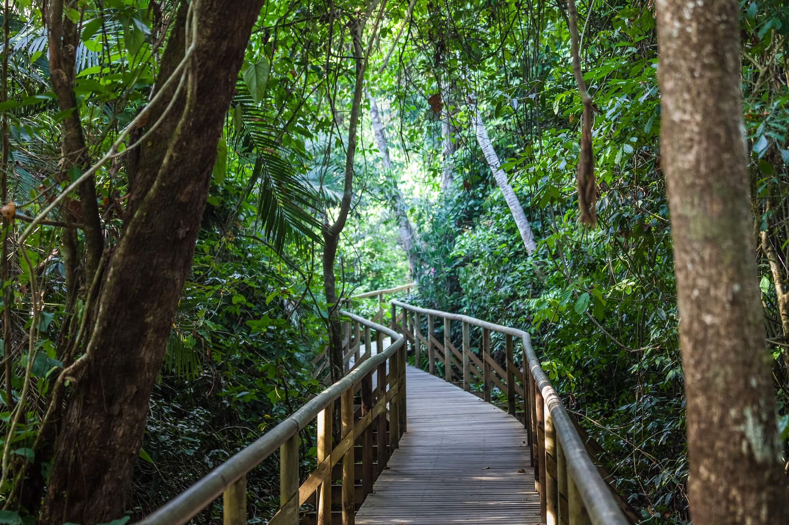

Parque Nacional Manuel Antonio

El Parque Nacional Manuel Antonio nació a partir de la presión comunal que se manifestaba en contra de la prohibición de sus antiguos dueños extranjeros para el usufructo de las playas por parte de los pobladores locales. Los extranjeros tenían un marcado interés en desarrollar la zona como centro turístico. Así gracias a la presión de la comunidad nace en 1972 el “Parque Recreativo Nacional Playas de Manuel Antonio”, por medio de la Ley No. 5100.
Referencia


